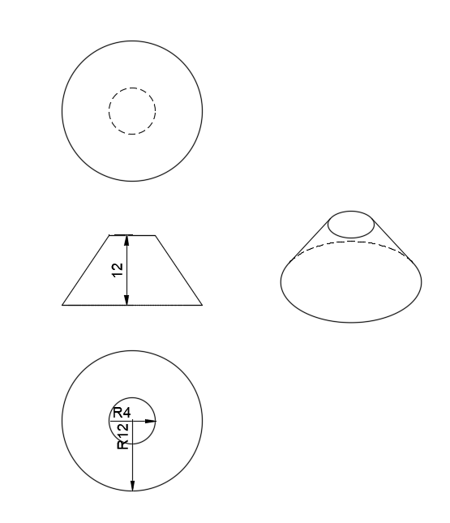
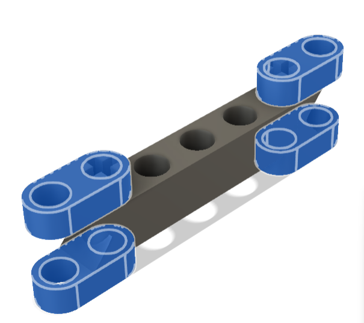
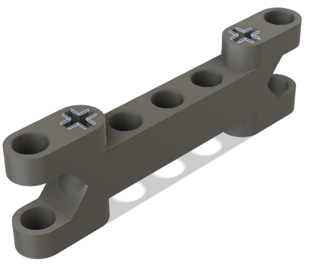
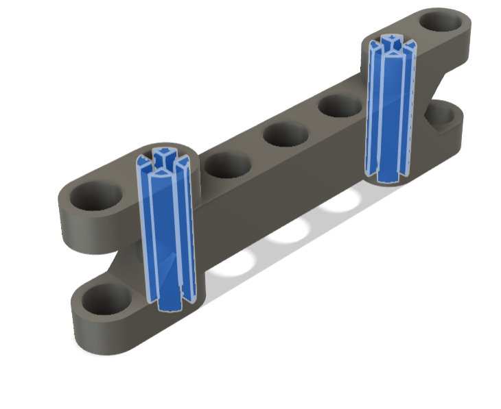
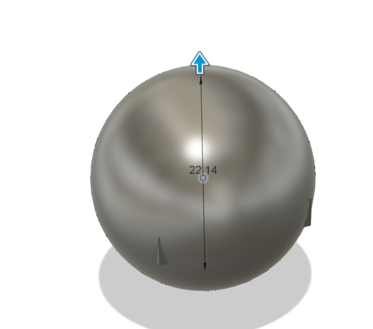
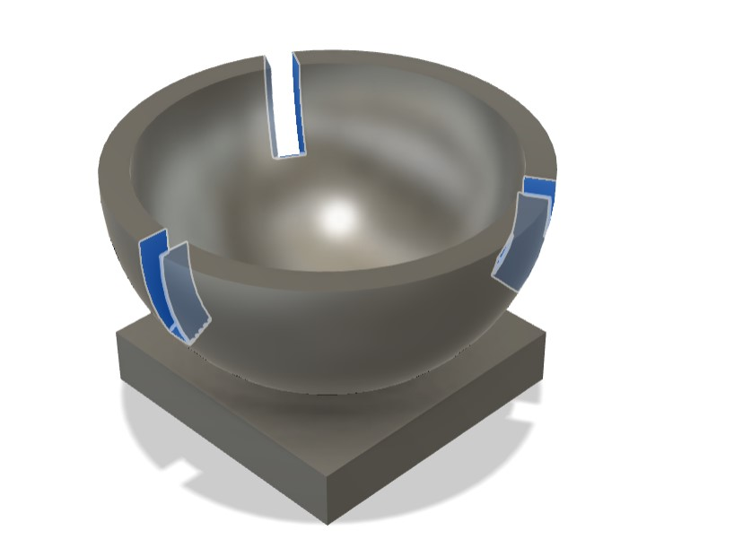
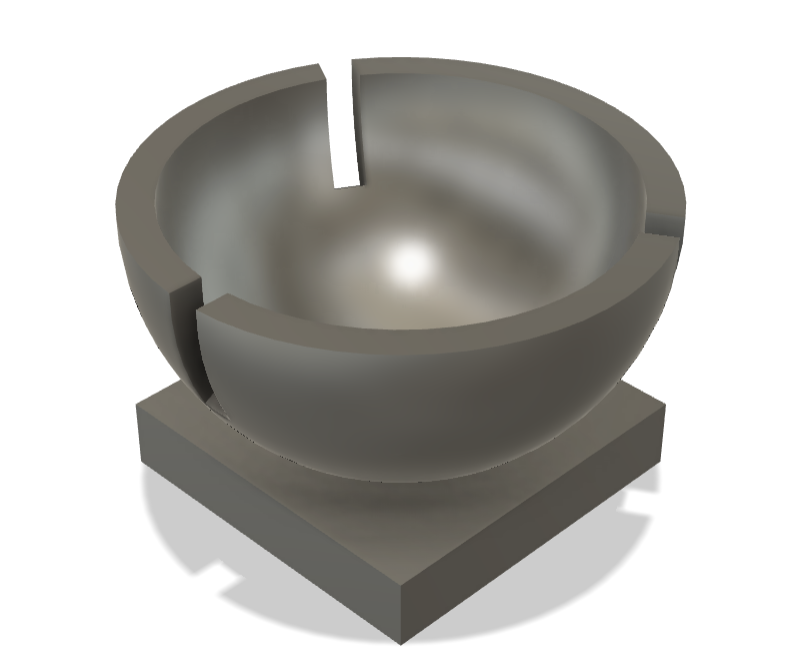

Deep Dive into Fusion 360 (Part 2)
Flattened Cone Warmup
As a warmup before starting class one day, I designed a flattened cone to the following specifications:

I first made a sketch on the ZY-plane in Fusion360, where I created a quadrilateral to match the one shown in the requirements image.
I then used the Revolve tool to revolve the entire quadrilateral sketch 360 degrees around the Z axis to create a full flattened cone:
Finally, since the warmup asked me for a 2D drawing, I generated a 2D drawing based off the design.
 |
 |
Bicycle Rack Design
As a review and challenge for my current Fusion360 knowledge, I was asked to design a bicycle rack to a set of specified dimensions. Here is the image with dimensions that I was designing off of:
I first created a sketch on the ZY-plane and used the line and circle tools to design my sketch to match the specified dimensions:
I then created a new sketch on the XY-plane and created a circle with a diameter of 4mm. To make the design 3D, I used the sweep tool to sweep the circle along the path of the bike rack.
 |
 |
Generating 2D Drawings
I used Kevin Kennedy's Youtube Video to learn how to generate 2D drawings in Fusion. To make a 2D drawing, I first navigated to the design I wanted to make a drawing of. I then clicked on the File dropdown menu, and clicked New Drawing -> From Design, making sure to select the object I wanted a drawing of. To practice making 2D drawings, I generated a drawing from the Fusion360 example design for a connector joint:

I then created a 2D drawing of my bicycle rack design:

Lego Technic Brick Design
For more practice designing objects in Fusion, I was asked to create a Lego Technic Brick from the following image to its dimensions:

There were many possible approaches to designing the brick, but I started with a 3D rectangular prism to match the general specifications of the actual brick part of the Lego. From there, I created concentric circles on the sides and the top, and extruded them (both as a new body and as a hole function) to the dimensions in the image. To create the Lego connectors at the bottom, I created 3 circles centered at the midpoints between the radii of the circle connectors on the top of the Lego brick. I then shelled the entire rectangular prism to hollow it out. Here is my completed design:

Custom Lego Design
I was then challenged to design a custom lego brick. I started designing the brick from the main Lego body as it was relatively simply and would be a good base to design the appendages from. I then sketched and extruded one appendage, mirroring it to all 4 sides of the Lego brick. Lastly, I touched up the brick, adding things like the Lego plus connector joint and smoothing out issues with the spline curve extrursion. The following image shows the brick that I was assigned to design.

I first used digital calipers to measure every dimension of the Lego brick. I would continue to use these calipers as I went through the designing process to ensure my dimensions were correct.
I started off with designing the body of the custom brick. I designed a sketch on the XY plane and extruded it to create the main body of the brick:
Next, I created a sketch to design one of the four appendages coming out of the Lego brick's body. I then mirrored it to all four positions and extruded them.
 |
 |
I then created and extruded a spline curve on the side of the Lego brick to mimic the curve of the real brick.
 |
 |
To create the plus axle joint I created another sketch in the shape of the plus, which I then mirrored and extruded.
|  |  |
Here was my final recreation of the Lego brick, shown in both 2D and 3D views:
 |
 |
Trading Lego Designs
Next, I traded Lego designs with a partner. We sent each other our respective 2D views of our design with dimensions. I would then model his Lego brick based solely on the 2D design he sent me:

I started the design by creating a sketch for the base of the Lego.
I then extruded each of the base's parts to the proper length. I extruded the area between the concentric circles and the two outer rectangles as Lego connectors.

I then created a sphere above the base, which I subsequently cut in half.
|  |  |
Next, I shelled the semisphere to make it hollow.
I then created 3 sketches on planes oriented 120 degrees from each other.

I created a rectangle perpendicular to each of the three planes. I then used the sweep tool to sweep the rectangle on the path, creating a hole that fits to the spherical shape.
 |
 |
Here are the 3D and 2D views of the final design:
|  |  |
Custom Object Design
To further practice using Fusion, I decided to design a pen holder, of which the tutorial can be found here. My Fusion360 file of the design can be downloaded here. To make the design, I started off with shelling a large cylinder. I then created a polygon on the XZ plane and extruded it as a hole onto the surface of the cylinder. I then repeated this across the whole surface of the cylinder via the rectangular and circular pattern tools.
 |
 |
To print this file, I first exported the file out of Fusion360 and opened it in PrusaSlicer. I then sliced the file with grid supports and a 15% infill, scaling the design down to finish printing under an hour. Since I was printing at home, my printer wasn't setup with wifi capabilities, so I saved the sliced file onto a flash drive which I then plugged into the printer.
Because the hexagonal patterning was so thin, when I originally printed the design, it was heavily reliant on supports. Those supports obscured the actual design and when I tried to peel them away, the entire design crumbled.
 |
 |
To solve this issue, I first upscaled the print which made the mesh more stable. I also changed the support type to be organic instead of grid, which minimized the points of contact between the supports and the actual print. This time, the supports were a lot easier to remove and did not damage the structure